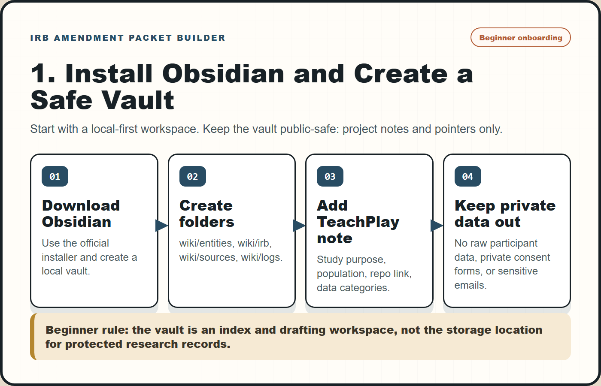
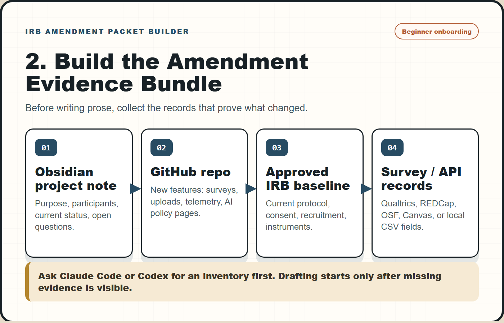
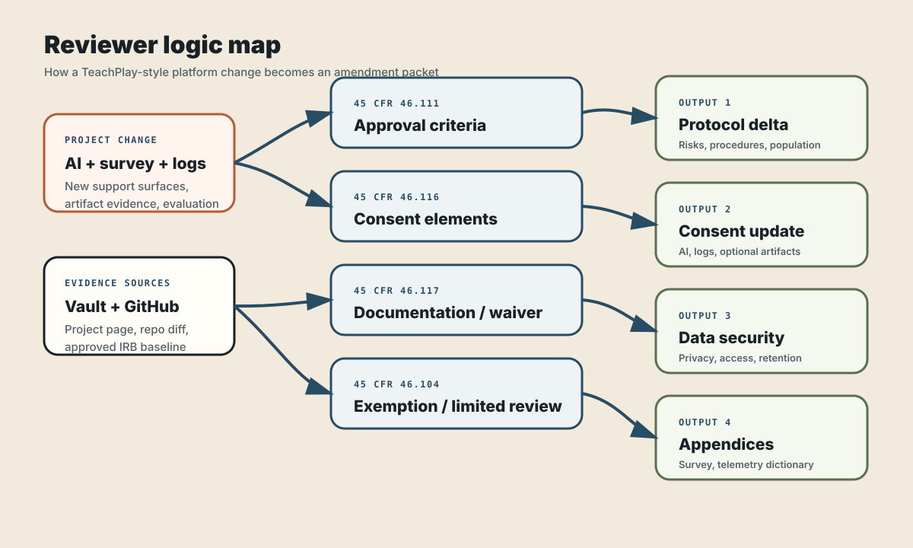
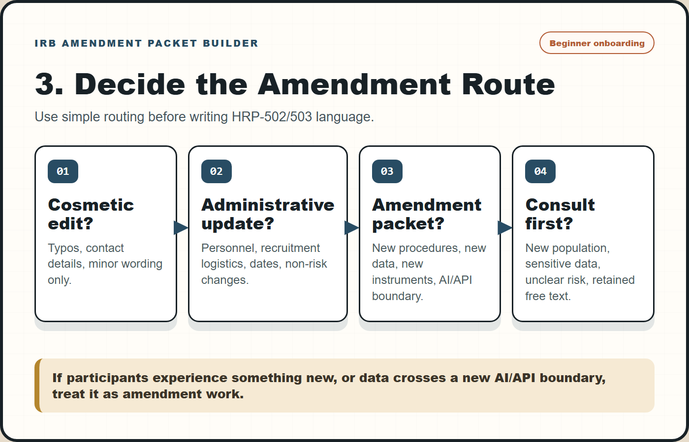
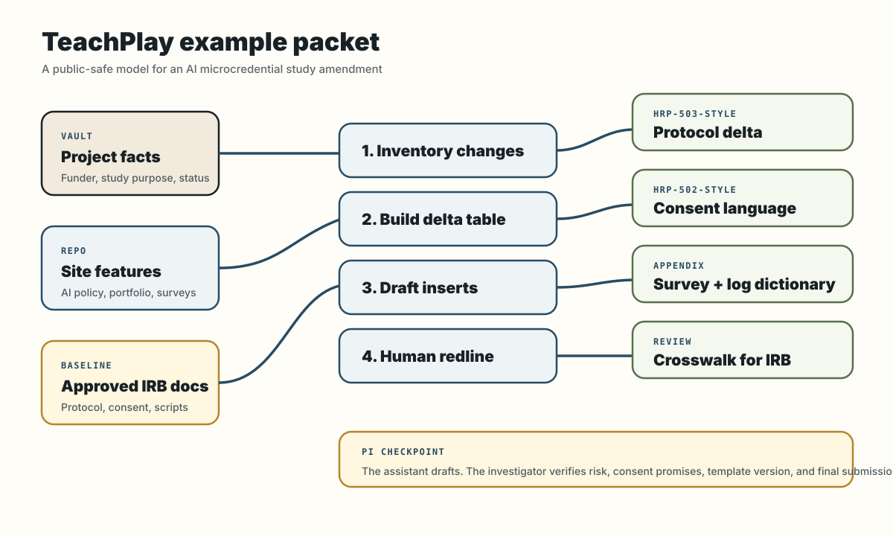
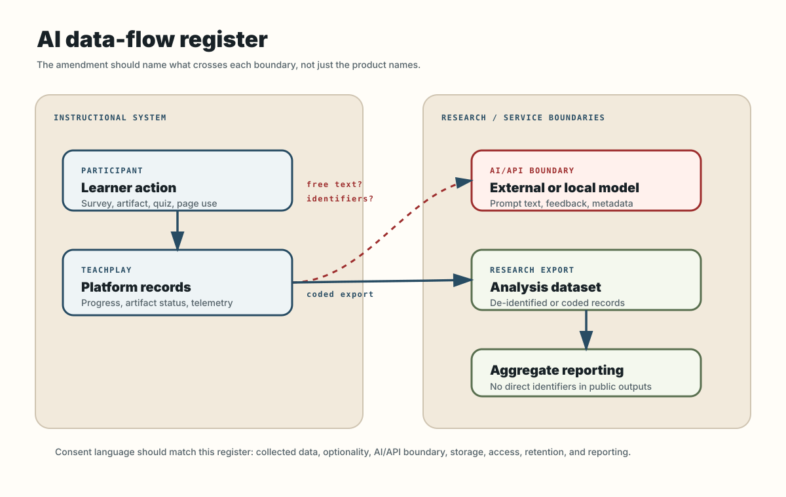
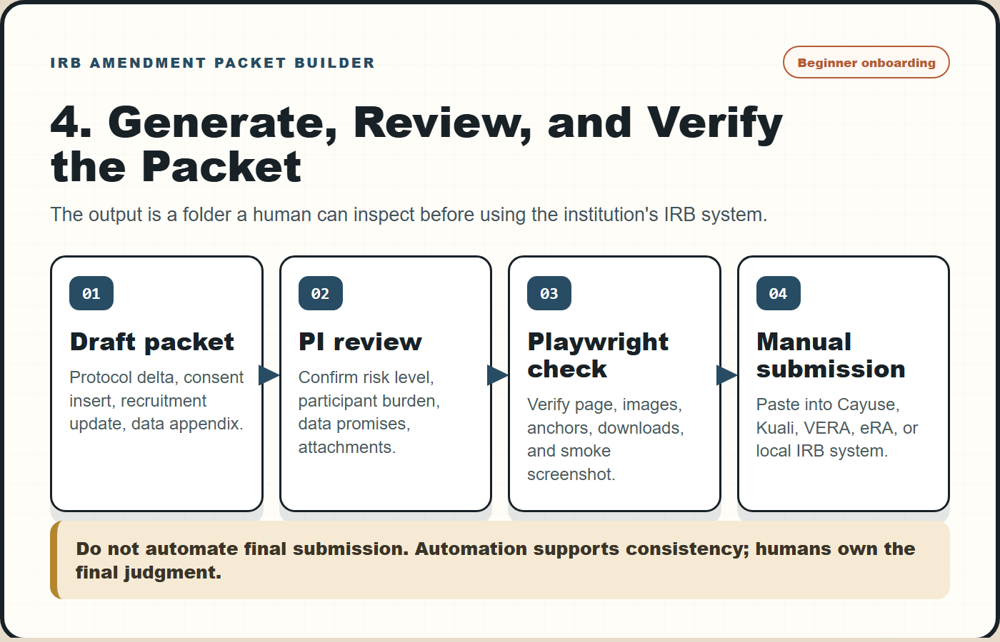

IRB Amendment Packet Builder
A practical guide for turning real project changes into HRP-502/503-style protocol language, consent language, recruitment updates, data-security language, and instrument appendices.
The worked example is TeachPlay: an AI-enhanced educational game design microcredential site with surveys, portfolio artifacts, learner-facing AI policy language, and public web deployment.
Most amendment work is translation, not blank-page writing
When a research project changes, the hard part is often not deciding what changed. The hard part is translating that change into the several languages an IRB packet expects: protocol language, consent language, recruitment language, data-security language, and instrument appendices.
"AI writes my IRB amendment."
"Claude Code turns my project records into a structured amendment draft I can review."
AI tutor, survey, telemetry, artifact upload, recruitment, or consent changes in an existing education study.
Start slowly: install Obsidian, then make a public-safe research vault
The packet builder works best when Obsidian is not treated as a writing app, but as the research control room. Install Obsidian, create a local vault, then add only project metadata, decisions, links, and drafting notes. Keep raw participant data, private consent forms, and sensitive IRB correspondence in approved institutional storage.

| Step | Action | Why it matters for IRB amendments |
|---|---|---|
| 1 | Install Obsidian from the official download page. | Use a local-first workspace that can hold linked project notes without forcing private data into a public repo. |
| 2 | Create a new vault such as ResearchVault or use an existing private vault. | The vault becomes the index for study purpose, status, instruments, and amendment decisions. |
| 3 | Create folders: wiki/entities, wiki/irb/approved-baselines, wiki/irb/amendment-packets, and wiki/sources. | Separates public-safe project memory from controlled baseline documents and generated packet drafts. |
| 4 | Create a TeachPlay project note using the starter template. | Gives Claude Code or Codex a stable place to read study purpose, participant population, data categories, and repo evidence. |
| 5 | Add pointers to private approved IRB docs instead of copying sensitive content into public notes. | Preserves review traceability without leaking protocol language, consent forms, or participant information. |
Download the Obsidian vault starter and paste it into the first TeachPlay project note, then replace placeholders with verified project facts.
Connect the research memory you already have
The strongest version of the workflow connects four sources that researchers often keep separate: a knowledge vault, project repositories, existing IRB documents, and live research instruments.

The useful claim is modest: this workflow helps you avoid missing sections, contradictions, or copy-paste drift when your actual research system changes.
Build an amendment input bundle before asking for prose
A reliable packet starts with an input bundle. Do not start by asking the assistant to "write the IRB." Start by asking it to inventory the project change and mark what evidence it used.
| Input | What it contributes | Example path or source |
|---|---|---|
| Vault project page | Study purpose, participants, project status, related instruments | wiki/entities/AI Microcredential GameDesign.md |
| Existing approved docs | Baseline language that should not be silently rewritten | Current protocol, consent, recruitment, instruments |
| GitHub repo | Actual features added: surveys, uploads, telemetry, AI policy pages | Educatian/TeachPlay |
| Survey/API records | Instrument IDs, item banks, export fields, distribution mode | Qualtrics, REDCap, OSF, Canvas, local CSV |
| Change request | The human reason for amendment: what is new, why now, who is affected | One-page intake memo |
Draft around the determinations reviewers must make
The amendment packet should not be organized around whatever the assistant can write fastest. It should be organized around the questions an IRB reviewer must answer. For AI-enhanced education research, the most reusable anchors are the Common Rule approval criteria, informed-consent elements, documentation/waiver rules, and exemption or limited-review conditions.

| Reviewer question | Regulatory anchor | Packet artifact |
|---|---|---|
| Are risks minimized and reasonable for the study change? | 45 CFR 46.111 approval criteria | Protocol delta + risk-change rationale |
| Will participants understand the new procedures and data uses? | 45 CFR 46.116 informed consent elements | HRP-502-style consent insert |
| Is written documentation needed, waived, or replaced by an information sheet? | 45 CFR 46.117 documentation of consent | Consent process note |
| Does the change remain in an educational/survey/interview exemption path, or does it need review? | 45 CFR 46.104 exemption categories and limited IRB review conditions | Reviewer crosswalk |
| What special risks come from AI, secondary data use, or re-identification? | OHRP/SACHRP AI considerations + NIH participant privacy principles | AI/data-security appendix |
HRP-502/503-style: consent, protocol, recruitment, data security, and appendix language mapped to the user's current local forms.Decide the amendment route before drafting the packet
One common failure mode is drafting a full packet when the change is only an administrative record update, or treating a substantive data-flow change like a minor edit. Before writing the HRP-502/503-style language, ask what route the change belongs to.

| Route | Typical trigger | Packet depth |
|---|---|---|
| Record update | Non-substantive typo, contact update, public URL correction with no participant-facing procedure change | Vault/IRB log note; no full amendment packet unless local policy says otherwise |
| Minor amendment draft | New survey items, refined recruitment wording, small logging dictionary clarification, added artifact appendix | Protocol delta, consent check, revised attachment, reviewer crosswalk |
| Consultation first | New AI/API boundary, new identifiable free text, new participant population, new sensitive data, changed risk profile | Short consult memo before drafting final language |
TeachPlay: AI microcredential study amendment scenario
The public example uses TeachPlay because it combines the recurring ingredients that trigger amendment work: a live learning site, AI-use guidance, survey evaluation, portfolio artifacts, and potential learner interaction traces.
AI-enhanced educational game design microcredential with 12 sessions and learner-facing resources.
Add pre/post Qualtrics surveys, portfolio artifact upload prompts, and optional interaction telemetry.
Consent must explain what is collected, what is optional, what AI tools see, and how artifacts/logs are protected.
| Project evidence | IRB translation |
|---|---|
| TeachPlay has AI-use policy and session pages. | Protocol should clarify whether AI use is part of instruction, research data, or both. |
| Pre/post surveys exist or are being generated in Qualtrics. | Attach final survey instruments and state matching logic, anonymity, incentives, and export fields. |
| Portfolio pages request game-design evidence. | Consent should say whether artifacts are collected for course/program evaluation, research analysis, or optional showcase use. |
| Site may record progress, search, quiz, or annotation events. | Data-security appendix should define event logs, retention, de-identification, and access controls. |

Make the AI boundary visible
For AI-enhanced education projects, the data-flow register is often more useful than a paragraph. It forces the team to name each data element, identify whether it crosses an AI/API boundary, and decide whether consent language needs to change.

| Register field | Why it matters | Example |
|---|---|---|
contains_free_text | Free text may accidentally include identifiers or sensitive context. | AI feedback prompt, reflection note, artifact title |
crosses_ai_or_api_boundary | Consent and security language should say whether data are sent outside the local research system. | External AI feedback request |
stored_in_research_export | Some data are processed transiently but not retained; others become research data. | Telemetry event vs retained artifact metadata |
consent_sentence_needed | Flags whether participant-facing language must be revised. | Yes for AI text retention; often yes for new logs |
Downloadable starters: AI data-flow register and telemetry dictionary.
Use Claude Code like a change-control assistant
A table of evidence sources, changed study surfaces, affected IRB documents, and unanswered questions. This prevents the model from filling gaps with plausible but unverified language.
The packet should be reviewable as a folder
The output is not a single document. It is a small amendment packet that a PI can inspect, edit, and paste into the institution's current system.

AI/data-security language must be concrete
IRB reviewers do not need vague claims that an AI tool is "secure." They need to know what data moves where, whether identifiers are included, whether raw text is stored, and who can access outputs.
| Weak wording | Better amendment wording |
|---|---|
| The study uses AI to support learning. | The instructional site may provide AI-assisted feedback on learner-submitted game-design artifacts. Research exports will not include direct identifiers in the artifact-analysis dataset. |
| Data will be kept confidential. | Survey responses, artifact metadata, and interaction logs will be stored separately from direct identifiers when feasible. Access is limited to approved study personnel. |
| Telemetry will be collected. | Event logs may include page views, quiz attempts, portfolio submission status, timestamps, and feature-use events. Logs will not intentionally collect private messages outside the study system. |
| AI-generated text may be analyzed. | If AI feedback or learner-AI interaction text is retained for research, the consent form will describe what text is retained, whether it is optional, and whether it is de-identified before analysis. |
Build a reviewer loop into the workflow
The most useful automation is not more prose. It is a checklist that forces the PI to approve or reject each change before submission.
Confirms study design, risk level, recruitment, incentives, and whether the change is actually an amendment.
Checks whether the draft accurately names identifiers, logs, survey fields, artifacts, AI services, and retention.
Moves language into the institution's current HRP-502/503-style form without preserving stale template text.
Red flags worth fixing before submission
| Red flag | Why it matters | Fix |
|---|---|---|
| Consent says "survey data" but the platform also logs telemetry. | Participant-facing language under-describes the data collected. | Add a clear interaction-log sentence and attach telemetry dictionary. |
| AI feedback is described, but no data-flow boundary is named. | Reviewers cannot assess privacy/confidentiality. | State whether prompts, artifacts, or metadata leave the local system. |
| Artifacts might contain names or faces. | Uploaded work products can include identifiers even if the form does not ask for them. | Add artifact de-identification instructions and review workflow. |
| Recruitment language implies program requirement. | Voluntariness can be unclear in course or credential settings. | Separate instructional participation from research data use. |
Public-safe templates
These files are intentionally generic. They are meant to scaffold thinking, not to carry private protocol language or participant data.
Use Playwright to check the guide and the packet like a real page
After the amendment guide or project packet changes, verify it in a browser rather than trusting static file inspection. Playwright catches missing anchors, broken template links, invisible images, and layout regressions that a markdown-only workflow misses.
| Check | What the smoke test verifies | Why it belongs in the workflow |
|---|---|---|
| Visible headings | IRB Amendment, Obsidian, TeachPlay, HRP-502/503-style, 45 CFR 46.111, and AI data-flow register text. | Confirms the page still carries the intended reviewer-facing frame. |
| Workflow images | At least four beginner onboarding PNGs and five total embedded images render with non-trivial visible dimensions. | Prevents broken PNG/SVG image paths after publishing. |
| Template links | Every templates/ download returns a successful response. | Protects the practical value of the guide. |
| Screenshot | Writes irb-amendment-packet-builder-smoke.png. | Gives a quick visual artifact for release checks or GitHub issue comments. |
Common reviewer-facing questions
Can the assistant fill HRP-502 or HRP-503 directly?
It can draft text for the relevant sections, but the investigator should paste into the current institutional form. Template versions and required fields vary by institution and date.
Should the vault contain raw consent forms or participant data?
No. Use the vault for project metadata, decisions, and pointers. Keep raw participant data and sensitive IRB documents in controlled local or institutional storage.
What makes TeachPlay a good example?
It has a public instructional site, AI-use guidance, survey evaluation, portfolio artifact surfaces, and possible usage logs. Those are exactly the surfaces that require clear amendment language.
Is this only for education research?
No. The same pattern works for many social, behavioral, and educational studies, especially when a digital platform changes after initial approval.
What should never be automated?
Risk judgment, final consent promises, institutional policy interpretation, and final IRB submission. The workflow drafts and checks consistency; it does not approve research.
Why add another data-flow image if the protocol already describes data?
Because AI-enhanced systems often mix instruction, platform analytics, survey instruments, and optional text/artifacts. A diagram makes it harder to hide an API boundary or accidentally omit a retained data element.
Official and template references
- Electronic Code of Federal Regulations. 45 CFR 46.104, exempt research categories, including educational tests, surveys, interviews, public observation, and limited IRB review conditions. https://ecfr.io/Title-45/Section-46.104
- Electronic Code of Federal Regulations. 45 CFR 46.111, criteria for IRB approval of research, including risk minimization, risk-benefit reasonableness, consent, documentation, privacy, and confidentiality. https://ecfr.io/Title-45/Section-46.111
- Electronic Code of Federal Regulations / Legal Information Institute. 45 CFR 46.116, general requirements and basic elements of informed consent. https://www.law.cornell.edu/cfr/text/45/46.116
- Electronic Code of Federal Regulations. 45 CFR 46.117, documentation of informed consent. https://ecfr.io/Title-45/Section-46.117
- HHS Office for Human Research Protections, Secretary's Advisory Committee on Human Research Protections. IRB considerations on the use of artificial intelligence in human subjects research. https://www.hhs.gov/ohrp/...
- NIH Grants & Funding. Principles and best practices for protecting participant privacy in data management and sharing. https://www.grants.nih.gov/policy-and-compliance/...
- University of Colorado Boulder Research & Innovation Office. Templates and resources for human research IRB, including HRP-502 consent and HRP-503a/503b protocol templates. https://www.colorado.edu/researchinnovation/node/8496/human-research-irb/templates-resources
- University of Wisconsin-Madison Human Research Protection Program. Informed consent document guidance and HRP-502 reference. https://irb.wisc.edu/...
- University of Illinois Chicago Office of the Vice Chancellor for Research. HRP-503a Social, Behavioral, and Educational Research Template update notice. https://research.uic.edu/...
- Obsidian. Download Obsidian. https://obsidian.md/download
- Obsidian Help. Manage vaults. https://help.obsidian.md/files-and-folders/manage-vaults
- Playwright. Getting started and browser installation. https://playwright.dev/docs/intro
- Playwright. Screenshots. https://playwright.dev/docs/screenshots
- Qualtrics. API documentation overview for survey creation, exporting responses, and event subscriptions. https://api.qualtrics.com/
- GitHub Docs. GitHub REST API documentation for repository metadata and workflow automation. https://docs.github.com/rest/reference